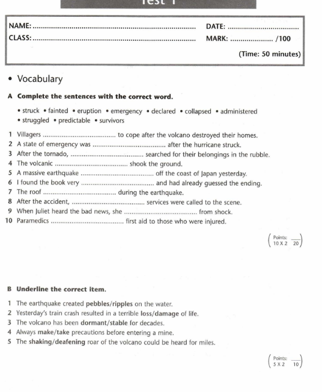
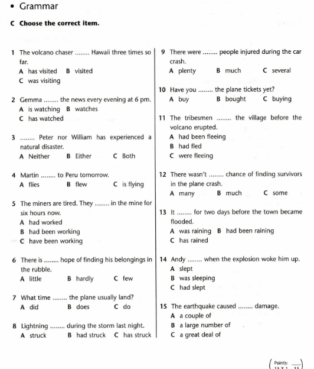
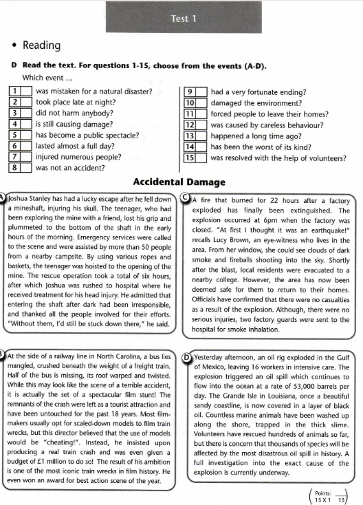
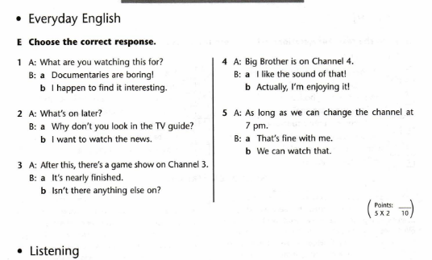
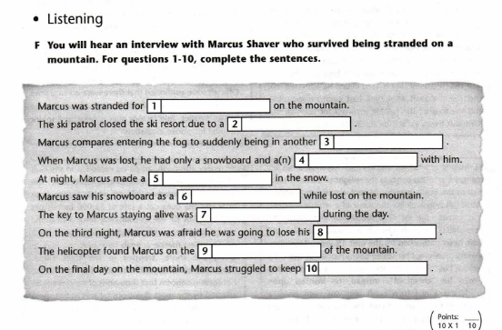
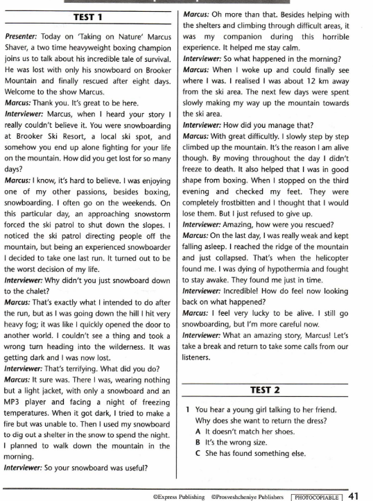
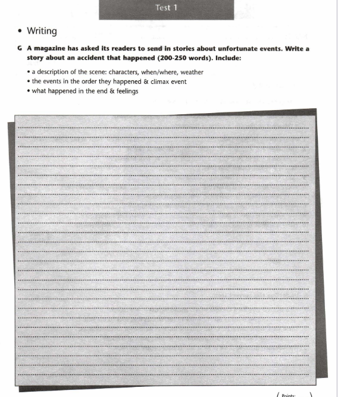
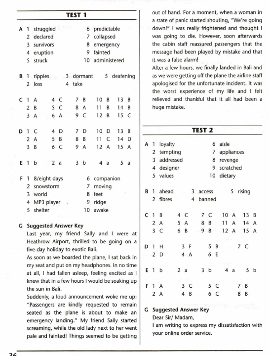

A / B · ЛексикаОригинальная страница 1/6

Ответы · A
A. Заполни предложения подходящими словами из рамки. Впиши по одному слову в каждый пропуск.
Ответы · B
B. Выбери правильное слово из каждой пары. Прочитай сочетание целиком.
Подготовка к контрольной по шагам: понятные правила на русском, английские упражнения и разбор ошибок.
Ключевая лексика теста и подготовки. Ищи по английскому слову или русскому значению. Нажми на слово, чтобы открыть транскрипцию и перевод. Это учебный словарь, а не строгая маркировка уровня CEFR каждого слова.
Тренировка: прочитай → скрой перевод → вспомни → открой и проверь → составь своё предложение. Выбери пять трудных слов и попроси преподавателя проверить их через десять минут.
Оригинальные страницы сохранены без изменений. Русские инструкции — рядом, поля ответов — под каждой страницей. Ответы сохраняются на этом устройстве.
В режиме обучения доступны подсказки и разборы. В режиме контрольной проверка открывается после сдачи. Раздел F адаптирован в чтение по оригинальному тексту интервью: аудио не требуется.

A. Заполни предложения подходящими словами из рамки. Впиши по одному слову в каждый пропуск.
B. Выбери правильное слово из каждой пары. Прочитай сочетание целиком.

Выбери букву ответа по оригинальной странице: в C — вариант A–C, в D — событие A–D, в E — реплику a или b.

Выбери букву ответа по оригинальной странице: в C — вариант A–C, в D — событие A–D, в E — реплику a или b.

Выбери букву ответа по оригинальной странице: в C — вариант A–C, в D — событие A–D, в E — реплику a или b.

Заполни пропуски словами из интервью. В ответе пиши только недостающую информацию. Проверь написание.
Прочитай внимательно и найди строку, подтверждающую каждый ответ. На изображении сохранён оригинальный текст.

1. Определи, какой информации не хватает. 2. Найди в интервью ту же мысль: она может быть выражена другими словами. 3. Выпиши только пропущенную часть. 4. Проверь число и написание. 5. Покажи преподавателю строку-доказательство.

Напиши рассказ о несчастном случае объёмом 200–250 слов. Укажи героев, время, место и погоду; опиши события по порядку и кульминацию; закончи результатом и чувствами.

Ключи Test 1 и пример письменного ответа для преподавателя. Открывай после самостоятельного выполнения, чтобы проверить и разобрать ошибки.
Результат — число верных ответов A–F из 60, а не отметка и не балл из 100 по шкале сборника. F проверяет чтение вместо аудирования. Рассказ G оценивает преподаватель.